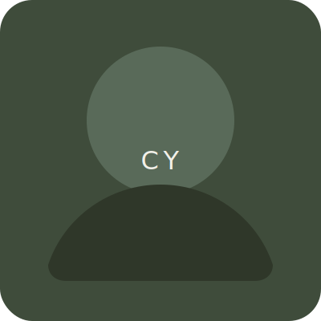

Clarence Yeung
Scientist | Biker | Baker
Ingredients
mise en place
Curiosity-led research
Motion design experiments
Long-distance rides
Wild yeast starters
Collaborative energy
.
.
Strava mise en place
Activity globe prototype
.
View data pipeline
Inspect mock data